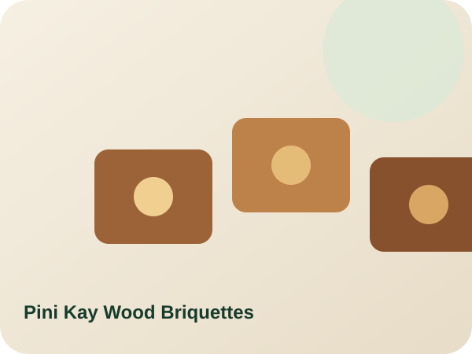

Brichete din lemn Pini Kay
Brichete din lemn Pini Kay pentru încălzire casnică, comerț și comenzi industriale. Alegeți saci, paleți sau cantități vrac. Umiditatea, ambalarea, certificarea și transportul sunt confirmate în oferta scrisă.
De la €190.00
Vezi produsul